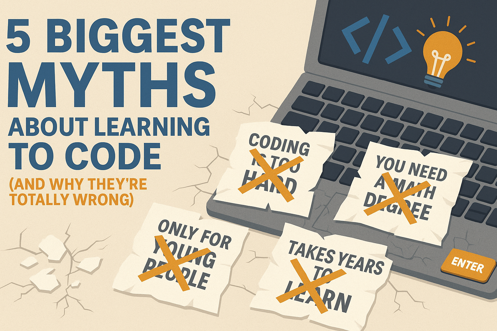

July 2025
Learning to code is one of the most valuable skills you can pick up today, no matter your age or background. But let’s be honest—there’s a lot of misinformation and outdated advice floating around. Maybe you've heard some of these myths and thought coding just “isn’t for you.” Let’s bust five of the biggest myths that hold people back from starting their coding journey!
This is the number one myth I hear, and it simply isn’t true. Yes, coding involves logic and problem-solving, but most programming tasks require basic math at most. What you really need is curiosity, patience, and a willingness to learn from mistakes.
Age is just a number—seriously! People switch to tech careers in their 30s, 40s, or even later. Whether you’re a student, changing careers, or just want a new hobby, there’s no “best age” to start coding. The only thing that matters is your motivation.
While a degree can help, most employers care more about your skills and projects than your diploma. There are tons of successful self-taught developers who learned from YouTube, online courses, and building their own projects. Show what you can do!
Getting stuck is part of the process! Every developer—beginner or expert—hits roadblocks. The key is learning how to research problems, ask for help, and keep trying. Coding is more about problem-solving than always knowing the answer.
While most documentation is in English, you don’t need to be fluent to start coding. There are learning resources in every language, and tools like Google Translate can help. Plus, the more you code, the more your tech vocabulary improves naturally.
Don’t let myths hold you back. Coding is for everyone—no matter your background, age, or education. All you need is curiosity and persistence. If you’ve been thinking about learning to code, this is your sign to start today.
Have you heard any other myths about coding? Share them in the comments or reach out through my contact form—let’s bust them together!